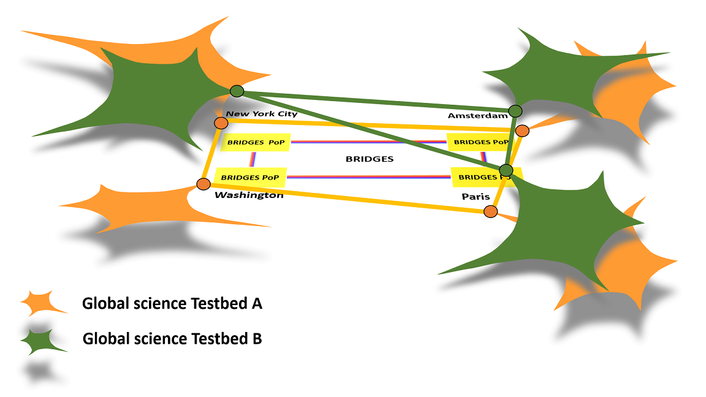

BRIDGES establishes a high-performance networking testbed connecting the United States and Europe. The proposed facility will serve two key objectives: First, it will be a prototype and demonstrator of a fully virtualized cyber-infrastructure architecture. In this respect, the testbed will develop, deploy, demonstrate, and analyze how comprehensive and foundational virtualization changes the way the R&E community can conceive of and incorporate Cyberinfrastrcuture (CI) into future global science applications and advanced networked services. Second, BRIDGES will link European research facilities directly to US research facilities by constructing a 100 Gbps research missioned network ring spanning the North Atlantic. This BRIDGES facility has the explicit purpose to facilitate collaborative global experiments across a common, contiguous, seamless and fully federated network research infrastructure.
BRIDGES starts from the premise that virtualization provides a new foundation for architecting cyber-infrastructure. Virtualization transcends traditional software and hardware notions of CI. Conceptually, virtualization is a set of design principles that when generalized and rigorously applied can abstract our notions of “cyber-infrastructure” away from a hardware or technology specific focus and lift them into a concept plane where virtual objects can be manipulated as building blocks and combined (or “composed”) into more sophisticated services and applications – all done in a scalable and secure fashion, with more flexibility, with more agility, and more cost efficiently than current legacy approaches.
The ability for a virtualized CI architecture to efficiently slice global infrastructure into parallel, insulated and isolated service environments will enable both the research community and service providers to deploy and manage advanced experimental services quickly and easily, in parallel and without risk to mission critical services or other production applications running over the same infrastructure. We see virtualization centered design as critical to allowing CI environments and operators to facilitate innovation and experimental new services safely, securely, scalably, and cost effectively. BRIDGES will demonstrate the power of comprehensive virtualization design in a CI that will allow many researchers to share the facility simultaneously, with each project having the access and control needed to run independent experiments.
The BRIDGES infrastructure consists of four POPs interconnected with 100Gig links. The POPs are connected to national research infrastructures in both US and Europe. Each POP hosts the optical terminating the links, the L2 equipment for providing Ethernet access and compute resources that can be dynamically integrated into user testbeds.
BRIDGES is exploring virtualization as a rigorous architectural approach to all of cyber-infrastructure design and application. This comprehensive formal approach to how we perceive, manipulate, and leverage “cyber-resources” will enable users to dynamically build and modify testbeds with guaranteed link, switching and compute resources. These capabilities will dramatically reduce the time researchers need to set up and adjust their testbeds, they will cut the processes typically required to set up such environments. User testbeds will run over the BRIDGES infrastructure as ships in the night.
The envisioned virtualization architecture and features will be implemented based on the GTS software stack developed by GEANT and the foundation for its Generalized Testbed Service. The BRIDGES project team will star by deploying GTS and then improving the software in terms of usability and feature set.
For additional information, visit the project collateral materials or contact us.